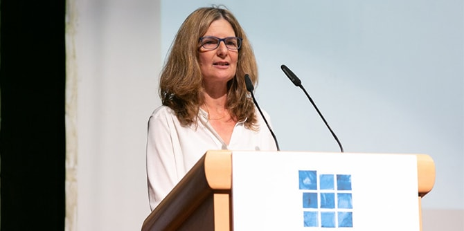

Cohort 25 Celebrates Graduation from Mandel School
2018-10-29
Cohort 25 of the Mandel School for Educational Leadership marked the end of two years of study of central issues in Israeli education and society
On October 29, 2018, the Mandel School for Educational Leadership celebrated the graduation of Cohort 25 at a ceremony attended by
Mr. Morton Mandel, chairman and CEO of the Mandel Foundation;
Professor Jehuda Reinharz, president of the Mandel Foundation;
Mr. Stephen Hoffman, vice chairman of the Mandel Foundation;
Mr. Moshe Vigdor, director general of the Mandel Foundation–Israel; and
Mr. Shmuel Abuav, director general of Israel's Ministry of Education.
“The Mandel Foundation has left its mark on a broad range of segments of Israeli society,” said
Shmuel Abuav, director general of the Education Ministry. “I would like to congratulate the graduates of Cohort 25, each of you in your own professional areas of interest. I hope that every one of you will be able to use your inner talents, together with what you have learned during the program, to each leave your own mark.”

Irit Sarig, a graduate of Cohort 25 of the Mandel School, spoke on behalf of all the graduates. “Early in the first year of the program, Mr. Mandel came to Israel," she said. "I thanked him for my acceptance to the program and for the great opportunity he had given me. He responded: ‘Thank me by doing good work.’ Dear Mort, throughout the two years of the program and through today, I have carried your words with me and I try to thank you in the way you requested. Thank you for your response and for the great responsibility that you have given me and the entire cohort for the betterment of Israeli society…. In my personal and professional development, I was given close guidance, I met with leading professionals in the field, and I completed an internship in the Ministry of Education. Today, when I ask questions of meaning, I am aware of how much my studies at Mandel gave me the space and tools to examine issues from different angles and with a broad perspective."
The 21 graduates of Cohort 25 of the Mandel School for Educational Leadership, which was founded in 1991 as a collaboration between the Mandel Foundation and the Ministry of Education, completed two years of studies in which they explored the central issues facing Israel n the realms of education, society, and leadership.
"Through the years, we have invested in a number of different organizations," said
Mr. Morton Mandel, chairman and CEO of the Mandel Foundation. "The investment we have made in the Mandel program in Israel, I feel, is the investment that has given us the highest return of any investment that we have made."
Held at the Menachem Begin Heritage Center in Jerusalem, the ceremony also marked three programs of the Mandel Leadership Institute: The Mandel Programs for Leadership Development in the Haredi Community, the Mandel Youth Leadership Program, and the Mandel Program for Leadership in Jewish Culture.


{kind=link}
{kind=link}
{kind=link}